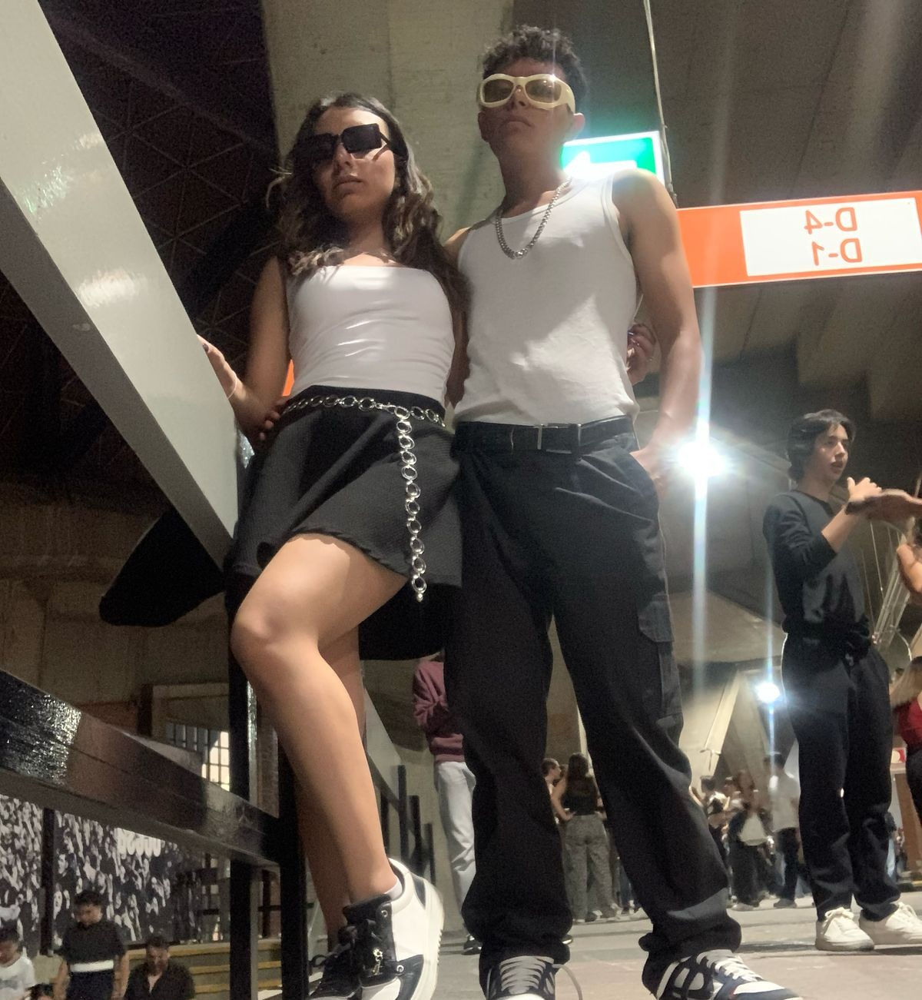
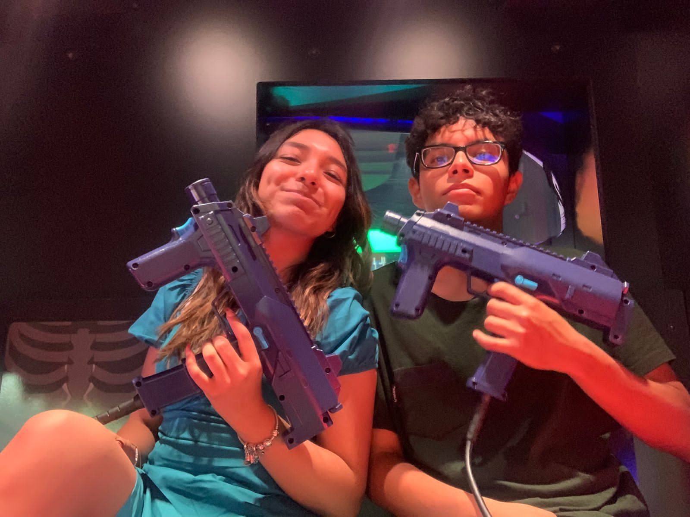
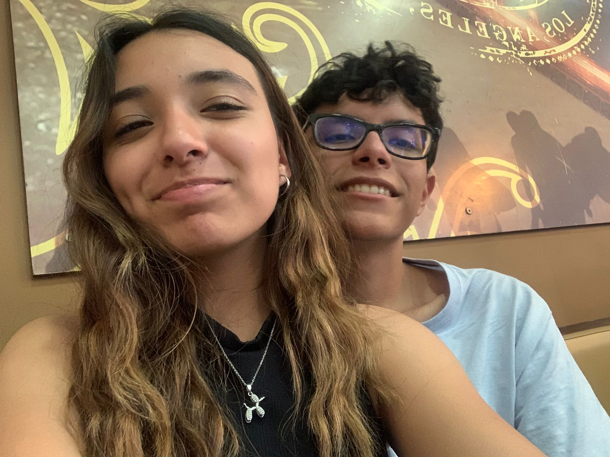
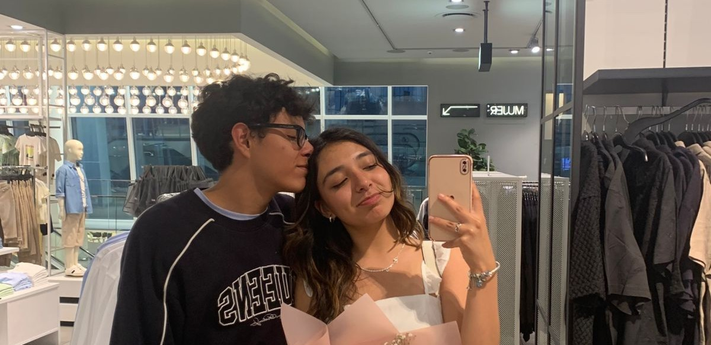
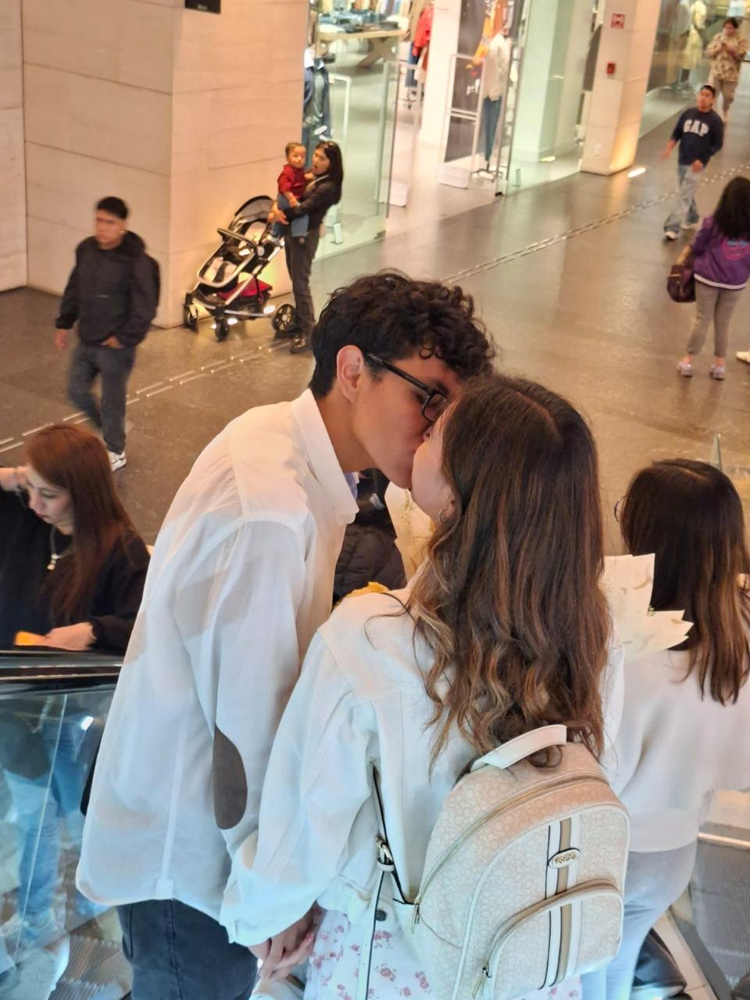
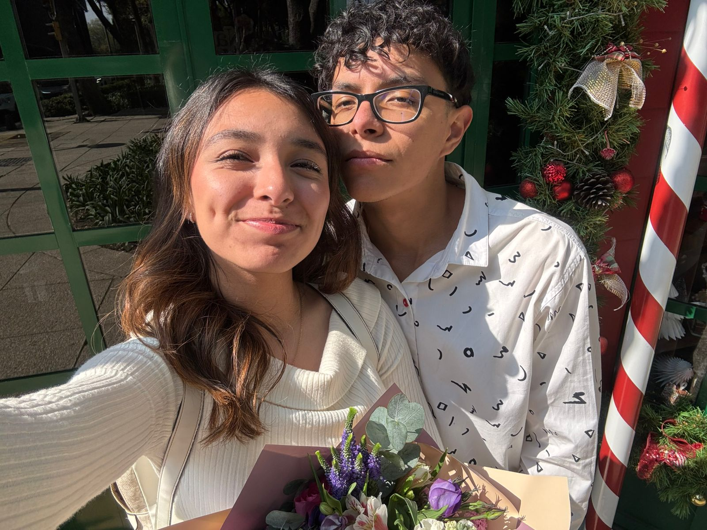
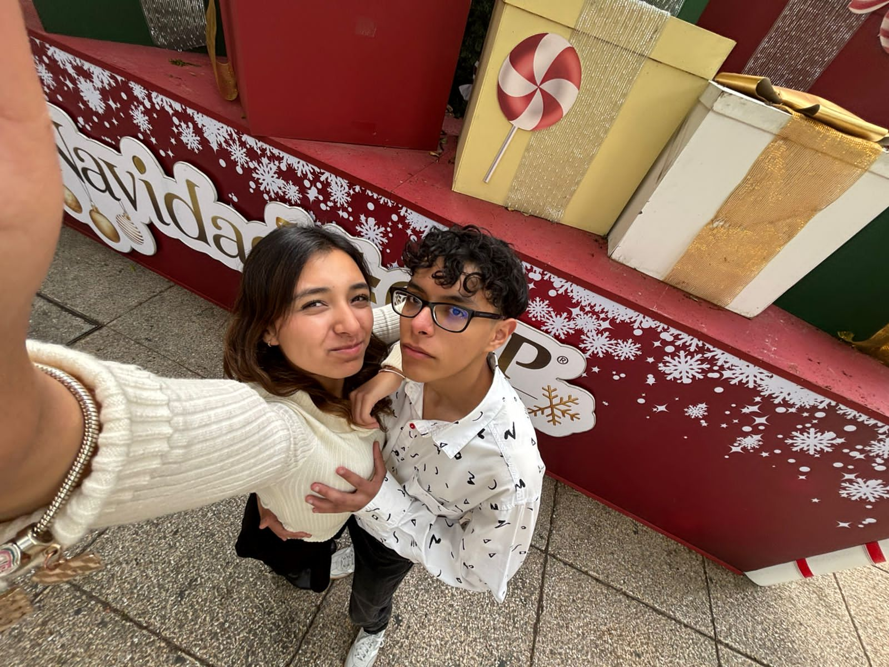

Carta de Santiago para Fresita
Querida Fer Vieyra, me dijiste que escribiera algo memorable, así que aquí está mi recuerdo de la primera vez que te invité a salir. Era otoño del 2024, no tenía mucho que te había conocido, sólo sabía que tenía muchas ganas de conocerte cada día más. Ese día estaba nervioso por haberte invitado; todo esto cambió cuando vi tu sonrisa al ver el restaurante, porque para ese momento yo ya sabía que te encantaba Rapunzel, y ahí supe que este lugar era el indicado para ser nuestra primera cita. Platicamos todo el tiempo y nos conocimos más y más, me encantaba escucharte contar todas tus historias a la vez. Cuando acabó la cita nos regresamos felices ambos, y yo estaba tan emocionado porque me di cuenta de la gran niña que eres.
Pero al final no supe valorar lo que tú me dabas como amiga y compañera de vida, terminé lastimándote y cometiendo muchos errores contigo; me arrepiento de cada uno de ellos. Me alegro mucho de que te hayas quedado conmigo y me hayas dado la oportunidad de demostrarte todo el amor que te tengo, no puedo creer lo afortunado que soy de tenerte a mi lado. Eres la mejor persona que he conocido y me siento muy feliz de poder compartir mi vida contigo, gracias por ser mi compañera de vida y por hacerme sentir tan especial cada día. Hoy cumplimos un año y quiero que sepas que te amo con todo mi corazón y que siempre estaré aquí para ti, apoyándote en todo lo que necesites y haciendo todo lo posible para hacerte feliz. Eres mi adoración, Fresita.
Con amor... Santiago
Toca el sobre para abrir la carta ✉
Te amaré hasta que caiga el último pétalo de esta rosa
Quedan 3 pétalos mágicos. Cada uno guarda un mensaje: tócalos.
Raspa para revelar ✨
Nuestros momentos
Un año, mil recuerdos.








Feliz aniversario, Fresita.